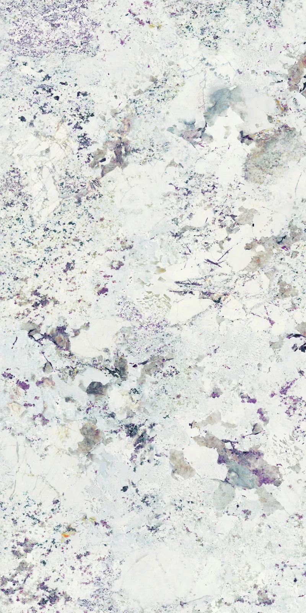
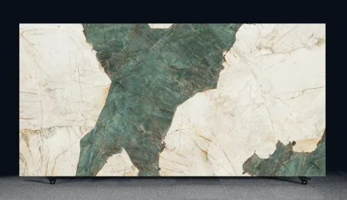
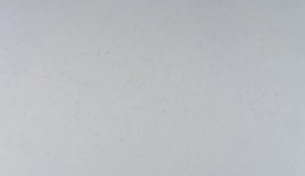

BEKAMAR / MİMARİ YÜZEYLER
Tasarımın
yeni yüzeyi.
Farklı malzeme teknolojileri, dokular ve renk anlayışları mimariyle buluşuyor. Bekamar'ın kompoze yüzey markalarını ve kendilerine özgü koleksiyonlarını keşfedin.
MARKALARI KEŞFEDİN ↓01 — 04
T-ONE / PORSELEN YÜZEY01 / YERLİ YÜZEY MARKASI
T-ONE
Türkiye merkezli bir yüzey markası olan T-ONE, farklı mimari stillere eşlik eden porselen koleksiyonları sunar. Doğal taşlardan ilham alan desenlerden sade, çağdaş yüzeylere uzanan renk ve doku seçenekleri; mutfak, banyo ve iç mekan projelerinde farklı tasarım yaklaşımlarına alan açar.
T-ONE KOLEKSİYONUNU KEŞFET ↗
FLORIM / İTALYA02 / İTALYAN SERAMİK VE PORSELENİ
FLORIM
İtalyan tasarım geleneğini çağdaş seramik ve porselen yüzey teknolojileriyle buluşturan Florim, doğal taş, mermer ve beton görünümlerinden ilham alan koleksiyonlar geliştirir. Farklı renk, ebat ve yüzey bitişleri; konut ve ticari projelerde zemin, duvar, tezgah ve diğer mimari uygulamalar için geniş tasarım olanakları sunar.
FLORIM KOLEKSİYONUNU KEŞFET ↗
CALISCO / KUVARS YÜZEY03 / KUVARS ESASLI YÜZEY
CALISCO
Calisco kompoze kuvars yüzeyleri, doğal taşlardan ilham alan desenleri çağdaş renk ve doku yorumlarıyla buluşturur. Açık ve koyu tonlardan belirgin damarlı görünümlere uzanan koleksiyon, mutfak ve banyo gibi iç mekanlarda farklı tasarım tercihlerine eşlik eder. Uygun kullanım ve bakım koşulları ürünün özelliklerine göre değerlendirilmelidir.
CALISCO KOLEKSİYONUNU KEŞFET ↗04 / KUVARS ESASLI KOMPOZE YÜZEY
ÇİMSTONE
Çimstone, kuvars esaslı kompoze yüzey koleksiyonlarında farklı renk ve desen seçenekleri sunar. Doğal taş görünümünden yalın ve çağdaş ifadelere uzanan modeller, özellikle mutfak ve banyo tezgahları ile iç mekan tasarımlarında değerlendirilebilir. Görünüm ve teknik özellikler seçilen ürün ve yüzey bitişine göre farklılık gösterir.
ÇİMSTONE KOLEKSİYONUNU KEŞFET ↗05 / SERAMİK VE PORSELEN
KALE / KALEBODUR
Kalebodur koleksiyonları ve güncel ürün bilgileri için resmi katalog sayfalarını inceleyin. Bekamar ürün arşivine doğrulanmış ürün verileri eklendikçe bu alan güncellenecektir.
KALE / KALEBODUR BİLGİLERİ ↗DOĞRU YÜZEY, PROJENİN PARÇASI
Markaları ve koleksiyonları
yakından tanıyın.